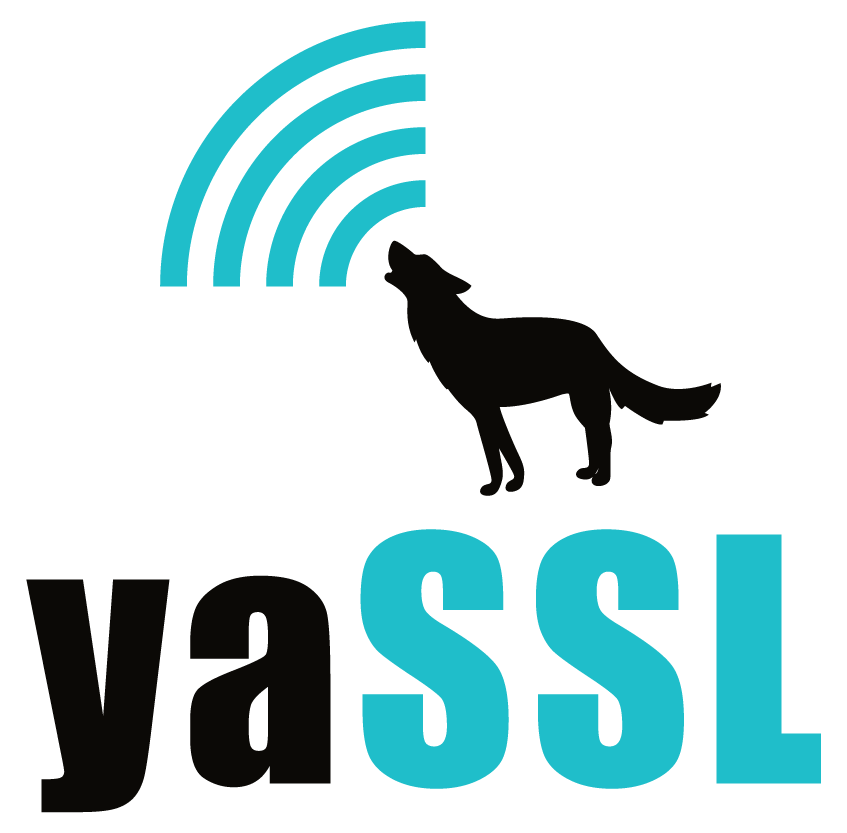

|
CyaSSL Release notes, version 1.1.0 Release 1.1.0 for CyaSSL adds bug fixes, a check against malicious session cache use, support for lighttpd, and TLS 1.2. To get TLS 1.2 support please use the client and server functions: SSL_METHOD *TLSv1_2_server_method(void); SSL_METHOD *TLSv1_2_client_method(void); CyaSSL was tested against lighttpd 1.4.23. See the notes in README for build instructions.  |